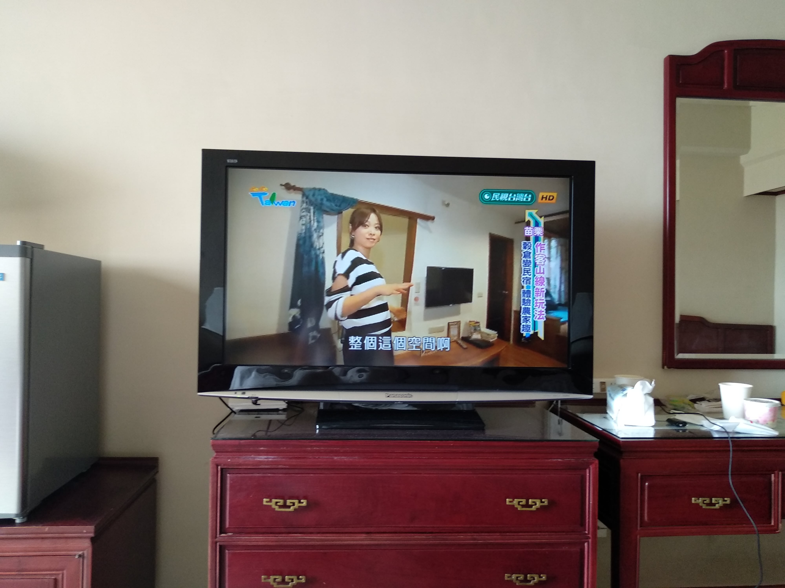
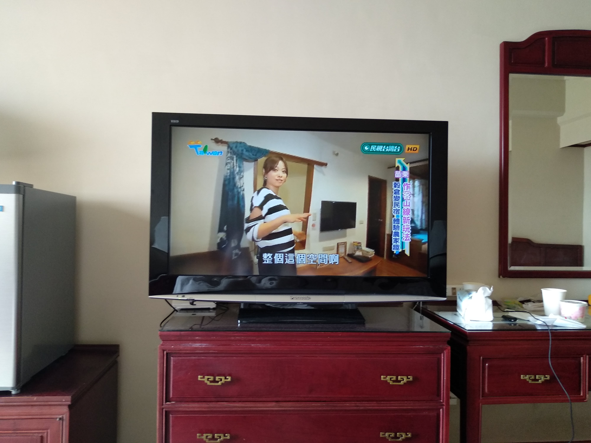

21. srpna 2023
Ostrov Formosa
Poté, co jsem si sbalil kufry, jsem 25. srpna 2022 letěl z vídeňského letiště směr Turecko a odtud jsem přestoupil do finální destinace: Taiwanu. Avšak, pokud mě mé vzpomínky nešálí, vzpomínám si, že personál Turkish Airlines mě původně nechtěl pustit na letadlo, že prý nemám jistý dokument vydaný ze školy, který by prokazoval, že na Taiwanu budu skutečně studovat. Nutno dodat, že škola daný dokument samozřejmě nikdy nevydala.
Nicméně, po zhruba 19 hodinách jsem konečně dorazil na Taiwan. Vzpomínám si na to jako by to bylo včera. Celý ostrov byl zahalen do roušky temnoty a mysteriózna, přičemž světlo velkoměsta osvětlovalo můj nový domov. Myslím si, že noc umocnila celý zážitek. Koneckonců, byl jsem poprvé v Asii a většinu poznatků jsem do té doby měl jen z kurzů čínštiny na univerzitě, knih, dokumentů a vlogů na YouTube. Poté, co jsem prošel všemi kontrolami a vyzvedl svá zavazadla, karanténní taxík mě odvezl do Taichungu, kde jsem si měl odbýt týdenní karanténu a zároveň město sloužilo jako můj azyl po celou dobu studia. Níže přikládám foto.


Nepřeháním, když řeknu, že mě zaujal kamión ověšený růžovými neony. Vzhledem k tomu, že studuji čínštinu na univerzitě, dal jsem se do řeči s panem řidičem, který však mému tehdy pekingskému přízvuku moc nerozuměl. Nyní však k věci: povíme si něco málo o kulturních odlišnostech taiwanského hotelu a možná i Taiwanu obecně.


 

Za prvé, Tunghai University mi hned na druhý den poslala balíček, v němž bylo tuším pravítko, teploměr, letáček na semináře pořádané v kostele Luce a Bible. Tehdy jsem to bral s nadhledem a vlastně jsem to ani moc neřešil. Přeci jenom, jiný kraj, jiný mrav. Navíc, univerzita byla známa svým kostelem a svou křesťanskou minulostí. Až mnohem později v průběhu studia jsem se dozvěděl, že ono písmo svaté není na čtení, nýbrž na noční stolek a slouží k odehnání zlých duchů. Dalším z novinek pro mne bylo, že Taiwanci před vstupem do pokoje zaklepou na dveře a prosí duchy pokoje, aby je nestrašili. Poslední věc, která dle mého souzení není zrovna košér, je, že na Taiwanu jsou úzké trubky kanalizačního systému. Tudíž, toaletní papír se musí vyhodit do odpadkového koše vedle toalety. Na závěr vodka z kohoutku. Na závěr tu není pitná voda z kohoutku. Tudíž, tento problém je vyřešen několika PET lahvemi balené vody v každém pokoji. Což mne přivádí k historce.
Během karantény jsem si musel měřit teplotu a každý den ji poslat zdravotní sestře na Tunghai University. Nicméně, ve stejné aplikaci na telefonu jsem měl i hotelovou správu. Pokud došla voda, jednoduše stačilo napsat hotelu a voda byla do pár minut v pokoji. Avšak, jednoho dne jsem byl nejspíš unavený z nedostatku pohybu a nechtělo se mi být zavřený v hotelu. Chtěl jsem tedy požádat o trochu vody. Za chvíli mi však přišla zpráva, že bych měl napsat správě hotelu. Chvíli jsem přemýšlel, co se děje a najednou mi to došlo: já blbec napsal o vodu zdravotní sestře...